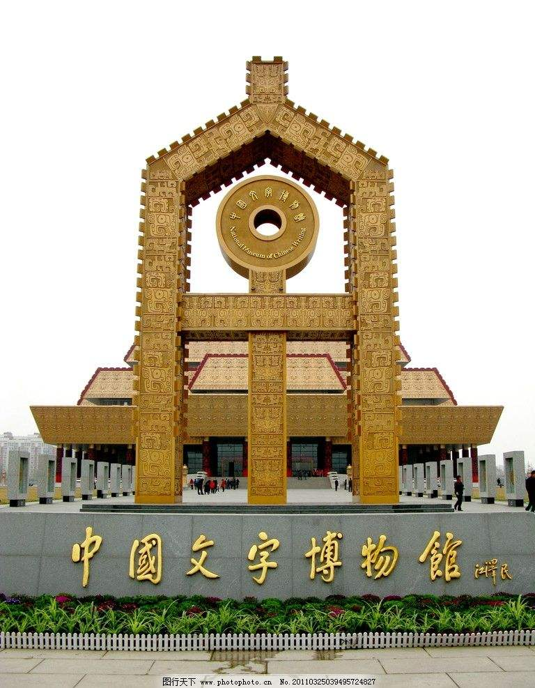

<!DOCTYPE html>
<html>
</html>
<head>
  <meta charset="utf-8">
  <meta http-equiv="X-UA-Compatible" content="IE=edge">
  <title>Anyang</title>
  <meta name="description" content="">
  <meta name="viewport" content="width=device-width, initial-scale=1">
  <meta name="robots" content="all,follow">
  <!-- Bootstrap CSS-->
  <link rel="stylesheet" href="vendor/bootstrap/css/bootstrap.min.css">
  <!-- Font Awesome CSS-->
  <link rel="stylesheet" href="vendor/font-awesome/css/font-awesome.min.css">
  <!-- Google fonts - Roboto-->
  <link rel="stylesheet" href="https://fonts.googleapis.com/css?family=Roboto:400,300,700,400italic">
  <!-- owl carousel-->
  <link rel="stylesheet" href="vendor/owl.carousel/assets/owl.carousel.css">
  <link rel="stylesheet" href="vendor/owl.carousel/assets/owl.theme.default.css">
  <!-- theme stylesheet-->
  <link rel="stylesheet" href="css/style.default.css" id="theme-stylesheet">
  <!-- Custom stylesheet - for your changes-->
  <link rel="stylesheet" href="css/custom.css">
  <!-- Favicon-->
  <link rel="shortcut icon" href="img/anyang/icon.jpeg">
  <!-- Tweaks for older IEs--><!--[if lt IE 9]>
    <script src="https://oss.maxcdn.com/html5shiv/3.7.3/html5shiv.min.js"></script>
    <script src="https://oss.maxcdn.com/respond/1.4.2/respond.min.js"></script><![endif]-->
    <script type="text/javascript" charset="utf-8"  src="js/L2Dwidget.0.min.js"></script>
    <script type="text/javascript" charset="utf-8"  src="js/L2Dwidget.min.js"></script>
    <script type="text/javascript">
        L2Dwidget.init({"display": {
            "superSample": 2,
            "width": 200,
            "height": 400,
                  "position": "left",
                      "hOffset": 0,
            "vOffset": 0
              }
          });
    </script>
    <style>
      #live2dcanvas {
        border: 0 !important;
      }
    </style>
</head>
<body>
  <div id="all">
    <div class="container-fluid">
      <div class="row row-offcanvas row-offcanvas-left"> 
        <!--   *** SIDEBAR ***-->
        <div id="sidebar" class="col-md-4 col-lg-3 sidebar-offcanvas">
          <div class="sidebar-content">
            <h1 class="sidebar-heading"> <a href="index.html">安阳 Anyang</a></h1>
            <ul class="sidebar-menu">
              <!-- Link-->
              <li class="sidebar-item"><a href="index.html" class="sidebar-link active">主页</a></li>
              <!-- Link-->
              <li class="sidebar-item"><a href="about.html" class="sidebar-link">去旅游</a></li>
              <!-- Link-->
              <li class="sidebar-item"><a href="contact.html" class="sidebar-link">社区论坛</a></li>
          </ul>
            <p class="sidebar-p">&ensp;&ensp;安阳，河南省地级市，古称相、殷、邺、邺城、邺都、邺郡、相州、彰德等，简称殷或邺，位于中国中北部、河南省最北部，地处河南、山西、河北三省交界处，东接濮阳，西临长治，南接鹤壁、新乡，北临邯郸。 </p>
            <p class="sidebar-p">&ensp;&ensp;历史上，先后有商朝、曹魏、后赵、冉魏、前燕、东魏、北齐等在安阳建都，素有“七朝古都”之称。</p>
            <!--
            <p class="social"><a href="#" data-animate-hover="pulse" class="external facebook"><i class="fa fa-facebook"></i></a><a href="#" data-animate-hover="pulse" class="external gplus"><i class="fa fa-google-plus"></i></a><a href="#" data-animate-hover="pulse" class="external twitter"><i class="fa fa-twitter"></i></a><a href="#" title="" class="external instagram"><i class="fa fa-instagram"></i></a><a href="#" data-animate-hover="pulse" class="email"><i class="fa fa-envelope"></i></a></p>
            
            <div class="copyright text-center text-md-left">
              <p class="credit">Copyright &copy; 2019.Company name All rights reserved.<a target="_blank" href="http://sc.chinaz.com/moban/">&#x7F51;&#x9875;&#x6A21;&#x677F;</a></p>
            </div>
            -->
          </div>
        </div>
        <!--   *** SIDEBAR END ***  -->
        <!--   *** PORTFOLIO ***-->
        <div class="col-md-8 col-lg-9 content-column">
          <div class="small-navbar d-flex d-md-none">
            <button type="button" data-toggle="offcanvas" class="btn btn-outline-primary"> <i class="fa fa-align-left mr-2"></i>Menu</button>
            <h1 class="small-navbar-heading"> <a href="index.html">Creative </a></h1>
          </div>
          <div class="grid row">
            <div class="col-md-6 col-lg-3 grid-item"> 
              <div class="box-masonry"> <a href="renwen.html" title="" class="box-masonry-image with-hover-overlay"></a>
                <div class="box-masonry-hover-text-header"> <a href="about.html" class="tile-link">  </a>
                  <h4>文字博物馆</h4>
                  <div class="box-masonry-desription">
                    <p>
                      &ensp;&ensp;中国文字博物馆位于甲骨文的故乡——河南省安阳市，是经国务院批准建设的集文物保护、陈列展示和科学研究为一体的国家级博物馆，是中华汉字文化的科普中心，全国科普教育基地，爱国主义教育基地。
                      &ensp;&ensp;中国文字博物馆基本陈列以世界文字为背景，以汉字为主干，以少数民族文字为重要组成部分，荟萃历代中国文字样本精华，讲解中国文字的构形特征和演化历程。展览以详实的资料、严谨的布局、科学的方法和现代化的展示手段充分展示中华民族一脉相承的文字、灿烂的文化和辉煌的文明，同时反映华夏文明与中国语言文字的研究成果，具有普及性和学术性双重使命。
                    </p>
                  </div>
                </div>
              </div>
            </div>
            <div class="col-md-6 col-lg-3 grid-item"> 
              <div class="box-masonry"> <a href="renwen.html" title="" class="box-masonry-image with-hover-overlay with-hover-icon"></a>
                <div class="box-masonry-text"> 
                  <h4> <a href="detail.html">岳飞</a></h4>
                  <div class="box-masonry-desription">
                    <p>岳飞（1103年3月24日—1142年1月27日），字鹏举，相州汤阴（今河南省安阳市汤阴县）人。南宋时期抗金名将、军事家、战略家、民族英雄 、书法家、诗人，位列南宋“中兴四将”之首,著有《满江红》。</p>
                  </div>
                </div>
              </div>
            </div>
            <div class="col-md-6 col-lg-3 grid-item"> 
              <div class="box-masonry"> <a href="about.html" title="" class="box-masonry-image with-hover-overlay with-hover-icon"></a>
                <div class="box-masonry-text"> 
                  <h4> <a href="detail.html">扁粉菜</a></h4>
                  <div class="box-masonry-desription">
                    <p>
                      &ensp;&ensp;扁粉菜是河南豫北安阳一带的传统名菜，属于豫菜菜系。是安阳居民最爱吃的饭菜之一。 扁粉菜以粉条做主料，配以青菜、豆腐、猪血等，在一口大铁锅中煮。
                      &ensp;&ensp;扁粉菜的关键是高汤，高汤味道的好坏，直接影响扁粉菜的味道，因此，安阳扁粉菜经营者一直在高汤的做法上下功夫，使扁粉菜味道不断改善。吃扁粉菜的精髓在于辣椒，辣椒要香而微辣。
                      </p>
                  </div>
                </div>
              </div>
            </div>
            <div class="col-md-6 col-lg-3 grid-item"> 
              <div class="box-masonry"> 
                <div class="box-masonry-text"> 
                  <h4> <a href="about.html"></a>殷墟</h4>
                  <div class="box-masonry-desription">
                    <p>殷墟，原称“北蒙” ，是中国商朝后期都城遗址，位于河南省安阳市。盘庚十四年，商朝第19位君主盘庚迁都于北蒙（今河南安阳），改“北蒙”名为“殷”  。盘庚十五年，开始营建殷都。自盘庚迁殷，到公元前1046年帝辛亡国，经历了盘庚、小辛、小乙、武丁、祖庚、祖甲、廪辛、康丁、武乙、文丁、帝乙、帝辛共8代12位国王273年的统治  ，殷一直是中国商代后期的政治、经济、文化、军事中心。</p>
                  </div>
                </div>
              </div>
            </div>
            <div class="col-md-6 col-lg-3 grid-item"> 
              <div class="box-masonry"> <a href="about.html" title="" class="box-masonry-image with-hover-overlay"></a>
                <div class="box-masonry-hover-text-header"> <a href="detail.html" class="tile-link">  </a>
                  <h4>文峰塔</h4>
                  <div class="box-masonry-desription">
                    <p>文峰塔位于河南省安阳市古城内西北隅，高38.65米，周长40米，因塔建于天宁寺内，原名天宁寺塔；又因位于旧彰德府文庙东北方，作为代表当地“文风”的象征，故又称文峰塔。文峰塔建于五代后周广顺二年，已有一千余年历史 ，为全国重点文物保护单位。 </p>
                  </div>
                </div>
              </div>
            </div>
            <div class="col-md-6 col-lg-3 grid-item"> 
              <div class="box-masonry"> 
                <div class="box-masonry-text"> 
                  <h4> <a href="renwen.html">名字的由来</a></h4>
                  <div class="box-masonry-desription">
                    <p>
                      《史记·廉颇蔺相如列传》中有这样一段记载,“廉颇攻魏之防陵、安阳,拔之。”在《史记·赵世家》记载:“惠文王二十四年,廉颇将,攻魏房子,拔之,因城而还。又攻安阳,取之。”这是历史上第一次提到安阳。东晋隆安五年,北魏在邺城立相州,取河(檀)甲居相为名,是为相州名称之始。安阳遂称相州,亦称邺郡。隋、唐、宋都沿用相州一名。南宋绍熙三年(1192年),升相州为彰德府。民国二年(1913年),废彰德府,复置安阳县。1949年成立安阳市,隶属平原省。1952年,平原省建制撤销,安阳市为河南省地级市。”
                    </p>
                  </div>
                </div>
              </div>
            </div>
            <div class="col-md-6 col-lg-3 grid-item"> 
              <div class="box-masonry"> <a href="about.html" title="" class="box-masonry-image with-hover-overlay with-hover-icon"></a>
                <div class="box-masonry-text"> 
                  <h4> <a href="detail.html">红旗渠</a></h4>
                  <div class="box-masonry-desription">
                    <p>红旗渠工程于1960年2月动工，至1969年7月支渠配套工程全面完成，历时近十年。该工程共削平了1250座山头，架设151座渡槽，开凿211个隧洞，修建各种建筑物12408座，挖砌土石达2225万立方米，红旗渠总干渠全长70.6公里（山西石城镇～河南任村镇），干渠支渠分布全市乡镇。据计算，如把这些土石垒筑成高2米，宽3米的墙，可纵贯祖国南北，绕行北京，把广州与哈尔滨连接起来。</p>
                  </div>
                </div>
              </div>
            </div>
            <div class="col-md-6 col-lg-3 grid-item"> 
              <div class="box-masonry"> <a href="about.html" title="" class="box-masonry-image with-hover-overlay with-hover-icon"></a>
                <div class="box-masonry-text"> 
                  <h4> <a href="detail.html">太行屋脊</a></h4>
                  <div class="box-masonry-desription">
                    <p>太行屋脊景区妍秀如娥嵋，雄伟胜泰山，险峻如华岳，深幽如衡山。红岩壁立万仞，绿树碧映千山，山山皆丰碑，处处入图画，步随景移，可游、可赏、可居、可耕、可休闲、可修身，可涤凡尘，有世外桃源人间仙境这美誉。</p>
                  </div>
                </div>
              </div>
            </div>
            <div class="col-md-6 col-lg-3 grid-item"> 
              <div class="box-masonry"> <a href="renwen.html" title="" class="box-masonry-image with-hover-overlay with-hover-icon"></a>
                <div class="box-masonry-text"> 
                  <h4> <a href="detail.html">文王拘而演周易</a></h4>
                  <div class="box-masonry-desription">
                    <p>司马迁在《报任安书》里有名句：“文王拘而演周易，仲尼厄而作春秋”，最后司马迁也给出结论：“大抵贤圣发愤之所为作也”。那么这个拘押周文王，让其发愤的地点在哪里呢？答案就是羑（音有）里城。</p>
                  </div>
                </div>
              </div>
            </div>
            <div class="col-md-6 col-lg-3 grid-item"> 
              <div class="box-masonry"> <a href="renwen.html" title="" class="box-masonry-image with-hover-overlay"></a>
                <div class="box-masonry-hover-text-header"> <a href="detail.html" class="tile-link">  </a>
                  <h4>安阳一中</h4>
                  <div class="box-masonry-desription">
                    <p>学校于1946年成立，时名漳滨中学；1948年更名为太行区安阳第一中学；1950年更名为平原省安阳第一中学；1958年更名为安阳市第一中学。</p>
                  </div>
                </div>
              </div>
            </div>
            <div class="col-md-6 col-lg-3 grid-item"> 
              <div class="box-masonry"> <a href="renwen.html" title="" class="box-masonry-image with-hover-overlay"></a>
                <div class="box-masonry-hover-text-header"> <a href="detail.html" class="tile-link">  </a>
                  <h4>吕不韦</h4>
                  <div class="box-masonry-desription">
                    <p>早年经商于阳翟（今河南省禹州市），将秦国质子异人带回秦国，扶植其成为秦庄襄王后，被拜为相国，封文信侯，食邑河南洛阳十万户。带兵攻取周国、赵国、卫国土地，分别设立三川郡、太原郡、东郡，对秦王嬴政兼并六国的事业作出重大贡献。庄襄王去世后，迎立太子嬴政即位，拜为相邦，尊称“仲父”，权倾天下。</p>
                  </div>
                </div>
              </div>
            </div>
          </div>
        </div>
        <!--   *** PORTFOLIO END ***-->
      </div>
    </div>
  </div>
  <!-- JavaScript files-->
  <script src="vendor/jquery/jquery.min.js"></script>
  <script src="vendor/popper.js/umd/popper.min.js"> </script>
  <script src="vendor/bootstrap/js/bootstrap.min.js"></script>
  <script src="vendor/jquery.cookie/jquery.cookie.js"> </script>
  <script src="vendor/owl.carousel/owl.carousel.min.js"></script>
  <script src="vendor/masonry-layout/masonry.pkgd.min.js"></script>
  <script src="js/front.js"></script>
</body>